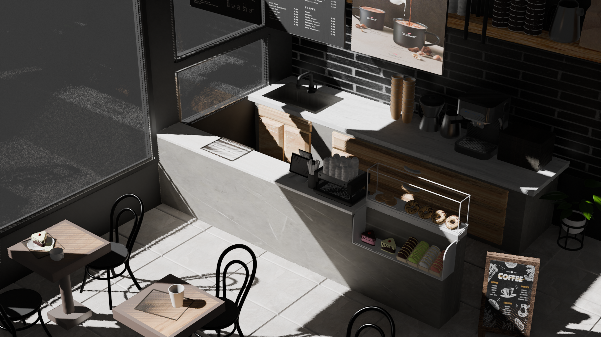
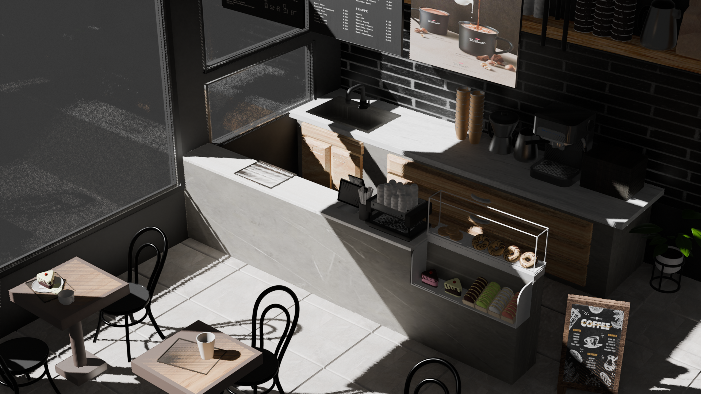

3D computer Graphics
Midterm Task Design 2025
Screw, Modifier, Array 등의 배치 기능들을 활용하여 제작하였습니다.
Adobe Illustrator와 Adobe Photoshop을 활용해서 Image Texture 사용 후 이미지를 만들어내고,
Blender 기능인 Image Texture, Texture Paint 등을 통해 External material을 포함하였습니다.
Period
25.04.15 ~ 25.04.29
Contribution
1인 100% 기획 및 제작
My Activity
블렌더 모델링
포토샵 텍스처
Used Tool


 
